전자계산기기능사 (2014-10-11 기출문제)
1과목: 전기전자공학
1. 저주파 증폭기의 출력 기본파 전압이 50V, 제2고조파 전압이 4V, 제3고조파 전압이 3V 인 경우 왜율은 몇 %인가?
- 5%
- 10%
- 15%
- 20%
(정답률: 52%)

2. 반도체에 정공을 만들기 위한 불순물(억셉터)에 속하는 것은?
- P
- Sb
- Ga
- As
(정답률: 54%)
3. 트랜지스터가 정상적으로 증폭작용을 하는 영역은?
- 활성 영역
- 포화 영역
- 차단 영역
- 역포화영역
(정답률: 68%)
4. 진폭 변조와 비교하여 주파수 변조에 대한 설명으로 가장 적합하지 않은 것은?
- 신호대 잡음비가 좋다
- 초단파 통신에 적합하다.
- 반향(Echo) 영향이 많아진다.
- 점유주파수 대역폭이 넓다.
(정답률: 55%)
5. 그림과 같은 회로의 전원에서 본 등가저항은 몇 Ω인가?
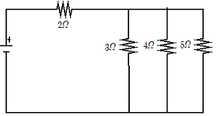
- 154/60 Ω
- 154/47 Ω
- 167/60 Ω
- 167/47 Ω
(정답률: 54%)
6. 제너 다이오드를 사용하는 회로는?
- 검파 회로
- 고압 정류회로
- 고주파 발진회로
- 전압 안정회로
(정답률: 53%)
7. 다음 중 플립플롭 회로는 어느 회로에 속하는가?
- 단안정 멀티바이브레이터
- 쌍안정 멀티바이브레이터
- 비안정 멀티바이브레이터
- 블로킹 발진회로
(정답률: 71%)
8. 다음 중 저주파 정현파 발진기로 주로 사용되는 것은?
- 빈 브리지 발진회로
- LC 발진회로
- 수정 발진회로
- 멀티바이브레이터
(정답률: 38%)
9. 다음 그림과 같은 회로의 명칭으로 가장 적합한 것은?(단, 다이오드는 정밀급이다.)
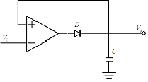
- 적분기
- 배압검파기
- 정밀클램프
- (+) 피크 검파기
(정답률: 52%)
10. 전파 정류회로에 대한 설명으로 옳은 것은?
- 직류의 한쪽 전압을 한쪽 방향으로 흐르게 하는 회로이다.
- 직류의 양쪽 전압을 한쪽 방향으로 흐르게 하는 정류회로이다.
- 교류의 한쪽 전압을 양쪽 방향으로 흐르게 하는 정류 회로이다.
- 교류의 양쪽 전압을 한쪽 방향으로 흐르게 하는 정류회로이다.
(정답률: 47%)
2과목: 전자계산기구조
11. 다음 그림과 같이 중심 노드를 경유하여 다른 노드와 연결하는 방식으로 전화망 등에 사용되는 통신망은?
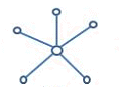
- 루프형 통신망(loop network)
- 성형 통신망(star network)
- 그물형 통신망(mesh network)
- 계층형 통신망(hierarchical network)
(정답률: 72%)
12. 10진수 25를 2진수로 표현하면?
- 11001
- 11010
- 11100
- 11110
(정답률: 79%)
13. 중앙처리장치로부터 입출력 지시를 받으면 직접 주기억장치에 접근하여 데이터를 꺼내어 출력하거나 입력한 데이터를 기억시킬 수 있고, 입출력에 관한 모든 동작을 자율적으로 수행하는 입출력 제어 방식은?
- 프로그램 제어방식
- 인터럽트 방식
- DMA 방식
- 채널 방식
(정답률: 65%)
14. 자료를 일정 시간(기간)동안 모아 두었다가 한 번에 처리하는 시스템은?
- 지연(Delayed) 처리 시스템
- 실시간(Real Time) 처리 시스템
- 일괄(Batch) 처리 시스템
- 시분할 (Time Sharing) 처리 시스템
(정답률: 85%)
15. 프로그램을 실행하는 도중에 예기치 않은 상황이 방생할 경우, 현재 실행중인 작업을 즉시 중단하고 발생된 상황을 우선 처리한 후 실행중이던 작업으로 복귀하여 계속 처리하는 것을 무엇이라고 하는가?
- 명령 실행
- 간접 단계
- 명령 인출
- 인터럽트
(정답률: 84%)
16. 다음과 같은 회로도는?
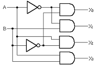
- 인코더
- 카운터
- 가산기
- 디코더
(정답률: 64%)
17. 미국에서 개발된 표준 코드로서 개인용 컴퓨터에 주로 사용되며, 7비트로 구성되어 128가지의 문자를 표현할 수 있는 코드는?
- EBCDIC
- UNICODE
- ASCII
- BCD
(정답률: 89%)
18. 컴퓨터 메모리의 스택영역을 이용하여 연산을 실행하는 경우로서 명령어에는 연산자 부분만 존재하고 오퍼랜드 부분이 없는 것은?
- 1 주소 명령어
- 2 주소 명령어
- 3 주소 명령어
- 0 주소 명령어
(정답률: 71%)
19. X축과 Y축을 움직여 종이에 그림을 그려주는 출력장치는?
- 마우스
- 모니터
- 스피커
- 플로터
(정답률: 85%)
20. 양방향 데이터 전송은 가능하나 동시 전송이 불가능한 방식은?
- Simplex
- Half duplex
- Full duplex
- Dual duplex
(정답률: 75%)
21. 바코드를 대체할 수 있는 기술로 지금처럼 계산대에서 물품을 스캐너로 일일이 읽지 않아도 쇼핑 카트가 센서를 통하면 구입 물품의 명세와 가격이 산출되는 시스템을 실용화 할 수 있으며, 지폐나 유가 증권의 위조 방지, 항공사의 수화물 관리 등 물류 혁명을 일으킬 수 있는 기술은?
- 태블릿(tablet)
- 터치 스크린(touch screen)
- 광학 마크 판독기(OMR-optical mark reader)
- 전자 태그(RFID-radio frequency identification)
(정답률: 80%)
22. 10진수 0.6875를 이진수로 옳게 바꾼 것은?
- 0.1101
- 0.1010
- 0.1011
- 0.1111
(정답률: 58%)
23. 이항(Binary) 연산에 해당하는 것은?
- MOVE
- SHIFT
- COMPLEMENT
- XOR
(정답률: 60%)
24. 스택(stack)에 대한 설명으로 옳지 않은 것은?
- 0-주소 지정방식에 이용된다.
- LIFO(Last In First Out)의 구조이다.
- 운영체제의 작업 스케줄링에 주로 사용된다.
- 작업이 리스트의 한쪽에서만 처리되는 구조이다.
(정답률: 46%)
25. 다음 중 최대 클록 주파수가 가장 높은 논리 소자는?
- CMOS
- ECL
- MOS
- TTL
(정답률: 72%)
26. 컴퓨터에서 사칙 연산을 수행하는 장치는?
- 연산장치
- 제어장치
- 주기억장치
- 보조기억장치
(정답률: 85%)
27. 근거리 또는 동일 건물 내에서 다수의 컴퓨터를 통신회선을 이용하여 연결하고, 데이터를 공유하게 함으로써 종합적인 정보처리 능력을 갖게 하는 통신망은?
- WAN
- VAN
- LAN
- DAN
(정답률: 81%)
28. 음의 정수를 컴퓨터 내부에 표현하는 일반적 방법이 아닌 것은?
- 부호와 1의 보수
- 부호와 2의 보수
- 부호와 3의 보수
- 부호와 절대값
(정답률: 79%)
29. 에러 검출뿐만 아니라 교정까지도 가능한 코드는?
- Biquinary Code
- Gray Code
- ASCII Code
- Hamming Code
(정답률: 86%)
30. 순차 접근 저장 매체(SASD)에 해당하는 것은?
- 자기 드럼
- 자기 디스크
- 자기 코어
- 자기 테이프
(정답률: 80%)
3과목: 프로그래밍일반
31. 기계어에 대한 설명으로 옳지 않은 것은?
- 컴퓨터가 직접 이해할 수 있는 숫자로 표기된 언어를 의미한다.
- 전자계산기 기종마다 명령부호가 다르다.
- 인간에게 친숙한 영문 단어로 표현된다.
- 작성된 프로그램의 수정 보수가 어렵다.
(정답률: 78%)
32. 프로그래밍 언어의 수행 순서로 옳은 것은?
- 컴파일러-로더-링커
- 로더-컴파일러-링커
- 링커-로더-컴파일러
- 컴파일러-링커-로더
(정답률: 67%)
33. 순서도를 사용하는 이유로 거리가 먼것은?
- 알고리즘의 논리적인 단계를 쉽게 파악할 수 있다.
- 프로그램을 작성할 때 기초적인 자료가 된다.
- 프로그램에 오류가 발생했을 때 쉽게 잘못된 부분을 발견하고 수정할 수 있다.
- 하드웨어에 관한 전문적인 지식이 증가된다.
(정답률: 74%)
34. C언어에서 사용되는 문자열 출력함수는?
- puts()
- gets()
- putchar()
- getchar()
(정답률: 74%)
35. 구조적 프로그래밍 기법에 대한 설명으로 옳지 않은 것은?
- 프로그램의 수정 및 유지보수가 용이하다.
- 가능한 GOTO 문을 많이 사용해야 한다.
- 프로그램의 정확성이 증가된다.
- 프로그램의 구조가 간결하다.
(정답률: 81%)
36. 고급 언어로 작성된 프로그램을 한 줄씩 받아들여 프로그램의 내용을 해석하고 번역한 다음, 번역과 동시에 프로그램을 한 줄 씩 실행시키는 것은?
- 어셈블러
- 컴파일러
- 인터프리터
- 운영체제
(정답률: 53%)
37. 운영체제의 페이지 교체 알고리즘 중 최근에 사용하지 않은 페이지를 교체하는 기법으로서, 최근의 사용여부를 확인하기 위해서 각 페이지마다 2개의 비트가 사용되는 것은?
- NUR
- LFU
- LRU
- FIFO
(정답률: 48%)
38. 시분할 시스템을 위해 고안된 방식으로 FCFS 알고리즘을 선점 형태로 변형한 스케줄링 기법은?
- SRT
- SJF
- Round Robin
- HRN
(정답률: 55%)
39. 다음 중 일괄 처리 시스템에 가장 적합한 업무는?
- 승차권 예약 업무
- 입.출금 조회 업무
- 급여 계산 업무
- 본. 지점 거래 내역 업무
(정답률: 69%)
40. 좋은 프로그래밍 언어가 갖추어야 할 요소와 거리가 먼 것은?
- 효율적인 언어이어야 한다.
- 언어의 확장이 용이하여야 한다.
- 언어의 구조가 체계적이어야 한다.
- 하드웨어에 의존적이어야 한다.
(정답률: 81%)
4과목: 디지털공학
41. 2진수 10100101의 2의 보수로 옳은 것은?
- 01011010
- 00001111
- 11110000
- 01011011
(정답률: 75%)
42. 동기적 동작이나 비동기적 동작이 모두 가능하며, 펄스가 가해질때마다 출력상태가 반전(toggle)되는 플립플롭은?
- D 플립플롭
- T 플립플롭
- RS 플립플롭
- JK 플립플롭
(정답률: 75%)
43. 동기식 9진 카운터를 만드는데 필요한 플립플롭의 갯수는?
- 1
- 2
- 3
- 4
(정답률: 68%)
44. 플립플롭이 특정 현재 상태에서 원하는 다음 상태로 변화하는 동작을 하기 위한 입력을 표로 작성한 것은?
- 카르노표
- 여기표
- 게이트표
- 트리표
(정답률: 56%)
45. 여러 회선의 입력이 한 곳으로 집중될 때 특정 회선을 선택하도록 하므로, 선택기라고도 하는 회로는?
- 멀티플렉서(multiplexer)
- 리플 계수기(ripple counter)
- 디멀티플렉서(demultiplexer)
- 병렬 계수기(parallel counter)
(정답률: 60%)
46. 다음 논리회로 기호에서 입력 A=1, B=0일때 출력 Y의 값은?
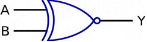
- Y=0
- Y=1
- Y=이전 상태
- Y=반대상태
(정답률: 61%)
47. 반가산기에서 입력 A=1이고 B=0이면 출력 합(S)과 올림수(C)는?
- S=0, C=0
- S=1, C=1
- S=1, C=0
- S=0, C=1
(정답률: 77%)
48. 논리식 Y=AB+B 를 간소화 시킨 것은?
- AB
- A+B
- A
- B
(정답률: 54%)
49. 다음 레지스터 마이크로 명령에 대한 설명으로 옳은 것은?(문제 오류로 정답은 3번입니다. 추후 복원을 다시하여 두겠습니다.)
- A 레지스터의 어드레스를 1 증가시킨 레지스터의 데이터 값을 전송하기
- A 레지스터의 어드레스를 1 증가시키고 어드레스를 A 레지스터에 저장하기
- A 레지스터의 데이터 값을 1 증가시키고 A 레지스터에 저장하기
- A 레지스터의 데이터 값을 1 증가시키고 A+1 레지스터에 저장하기
(정답률: 73%)
50. 계수기에서 가장 기본이 되는 계수기로서, 흔히 리플 계수기라고도 불리는 것은?
- 비동기형 계수기
- 상향 계수기
- 하향 계수기
- 동기형 계수기
(정답률: 60%)
51. 4 변수 카르노 맵에서 최소항(minterm)의 개수는?
- 16
- 12
- 8
- 4
(정답률: 65%)
52. 그레이 부호 1110을 이진수로 전환하면?
- 1001
- 1110
- 1011
- 0111
(정답률: 58%)
53. 컴퓨터 내의 연산시 숫자 자료를 보수로 표현하는 이유라 가장 타당한 것은?
- 덧셈과 뺄셈을 덧셈 회로로 처리할 수 있다.
- 수를 표현하는데 저장장치를 절약할 수 있다.
- 실수를 표현하기 쉽다.
- 미국표준협회에서 개발되어 대중성을 확보하고 있다.
(정답률: 58%)
54. JK 플립플롭의 두 입력이 J=1, K=1 일 때 출력(
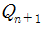
)의 상태는?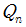
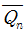
- 0
- 1
(정답률: 71%)
55. 다음 중 시프트 레지스터에 대한 설명으로 옳은 것은?(단, FF는 Flip Flop이다.)
- FF에 기억되는 것을 방해시키는 레지스터를 말한다.
- FF에 기억된 정보를 소거시키는 레지스터를 말한다.
- FF에 clock 입력을 기억시키기만 하는 레지스터를 말한다.
- FF에 기억된 정보를 다른 FF에 옮기는 동작을 하는 레지스터를 말한다.
(정답률: 72%)
56. 32개의 입력단자를 가진 인코더는 몇 개의 출력단자를 가지는가?
- 5 개
- 8개
- 32 개
- 64 개
(정답률: 54%)
57. 회로의 안정 상태에 따른 멀티바이브레이터의 종류가 아닌 것은?
- 비안정 멀티바이브레이터
- 단안정 멀티바이브레이터
- 쌍안정 멀티바이브레이터
- 주파수 안정 멀티바이브레이터
(정답률: 74%)
58. 다음 그림의 게이트 명칭은?
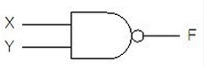
- OR
- AND
- NAND
- NOR
(정답률: 79%)
59. 카운터와 같이 플립플롭을 사용하는 디지털 회로를 무엇이라고 하는가?
- 조합 논리회로
- 순서 논리회로
- 아날로그 논리회로
- 멀티플렉서 논리회로
(정답률: 53%)
60. 불 대수의 기본으로 옳지 않은 것은?
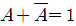
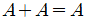
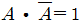
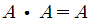
(정답률: 67%)